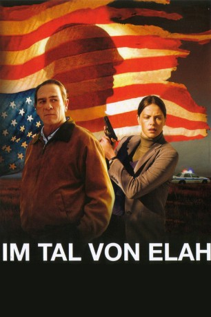
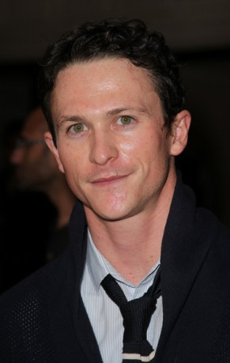

#1807 Im Tal von Elah
Alternativ: In the Valley of Elah
Auszeichnungen: für 1 Oscars nominiert
 
 IMDB-Wertung: 7.2 / 10
IMDB-Wertung: 7.2 / 10  Metascore: 65
Metascore: 65 
Der ehemalige Militär-Polizist Hank Deerfield (Tommy Lee Jones) versucht seit Tagen Kontakt zu seinem Sohn Michael aufzunehmen, der erst vor kurzer Zeit von seinem Irak-Einsatz in seine Einheit zurückkehrte. Als dieser verschwunden bleibt, fährt er spontan zu dessen Militär-Stützpunkt, um sich vor Ort auf die Suche nach ihm zu machen, während seine Frau (Susan Sarandon) zu Hause bleibt.Er wird von Michaels Kameraden zwar freundlich begrüsst, aber weiterhelfen kann ihm niemand. Auch die örtliche Polizei hat keine Lust, sich mit der Vermisstenanzeige eines Soldaten zu beschäftigen. Erst als plötzlich eine stark verstümmelte Leiche, die eine Vielzahl von Stichwunden aufweist, entdeckt wird, beginnen die Verantwortlichen sich mit Deerfields Fall zu beschäftigen...
Jahr: 2007
Dauer: 121 Minuten
FSK: 12
Land: USA Studio: WIPTonspuren:
Untertitel:
Auflösung: 720p (1280x528) Größe: 5591 MB
Genre: Krimi, Drama, Mystery, Thriller
Regisseur: Paul Haggis
Drehbuch: Paul Haggis, Mark Boal, Paul Haggis
Soundtrack: Mark Isham
Darsteller:
 Tommy Lee Jones als Hank Deerfield
Tommy Lee Jones als Hank Deerfield Charlize Theron als Det. Emily Sanders
Charlize Theron als Det. Emily Sanders Jason Patric als Lt. Kirklander
Jason Patric als Lt. Kirklander Susan Sarandon als Joan Deerfield
Susan Sarandon als Joan Deerfield James Franco als Sgt. Dan Carnelli
James Franco als Sgt. Dan Carnelli Barry Corbin als Arnold Bickman
Barry Corbin als Arnold Bickman Josh Brolin als Chief Buchwald
Josh Brolin als Chief Buchwald Frances Fisher als Evie
Frances Fisher als Evie Wes Chatham als Corporal Steve Penning
Wes Chatham als Corporal Steve Penning Jake McLaughlin als Spc. Gordon Bonner
Jake McLaughlin als Spc. Gordon Bonner- Mehcad Brooks als Spc. Ennis Long
-  Jonathan Tucker als Mike Deerfield
 Wayne Duvall als Detective Nugent
Wayne Duvall als Detective Nugent- Roman Arabia als Private Robert Ortiez
 Brent Briscoe als Detective Hodge
Brent Briscoe als Detective Hodge Greg Serano als Detective Manny Nunez
Greg Serano als Detective Manny Nunez Brent Sexton als Lt. Burke
Brent Sexton als Lt. Burke Devin Brochu als David Sanders
Devin Brochu als David Sanders Zoe Kazan als Angie
Zoe Kazan als Angie Glenn Taranto als Detective Wayne
Glenn Taranto als Detective Wayne- Jennifer Siebel Newsom als Jodie
- Joseph Bertót als School Janitor
 Rick Gonzalez als Phone Technician
Rick Gonzalez als Phone Technician- Loren Haynes als Police Photographer
- Sean Huze als Captain Jim Osher
 Kathy Lamkin als Chicken Shack Manager
Kathy Lamkin als Chicken Shack Manager- Pab Schwendimann als Pussy's Bouncer
- Josh Meyer als Joseph R. Millard
 Arron Shiver als Cop
Arron Shiver als Cop Jo Harvey Allen als Jo Anne
Jo Harvey Allen als Jo Anne Chris Browning als Checker Box Bartender
Chris Browning als Checker Box Bartender- David House als Morgue Officer
 Matthew Page als Guard
Matthew Page als Guard- Hans Steckly als Corporal Steckly
 James Blackburn als Cowboy , uncredited
James Blackburn als Cowboy , uncredited- Steven Blacksmith als Soldier , uncredited
- Damion Cruzz als Soldier Sam , uncredited
 Esodie Geiger als Military Nurse , uncredited
Esodie Geiger als Military Nurse , uncredited Karen M. Hudson als Office Detective , uncredited
Karen M. Hudson als Office Detective , uncredited- Laurie Johnson als Neighbor , uncredited
 Daniel Knight als Detective , uncredited
Daniel Knight als Detective , uncredited Z. Ray Wakeman als Detective Driver , uncredited
Z. Ray Wakeman als Detective Driver , uncredited- Brandon Weaver als Morgue Tech , uncredited
- Wil Willis als Angie's Husband , uncredited
- Babak Tafti als Iraqi Prisoner
- Jack Merrill als Medical Examiner
- David Doty als Truck Parts Salesman
- Pierre Barrera als TD's Bartender
- Mike Hatfield als Jo Anne's Husband
- James Haggis als Soccer Ball Player
Datei: X:\2007(G-M)\Im Tal von Elah (2007, FSK12, 1280x528).mkv seit 25.08.2015
Festplatte: HD 2007(A-Z)-2008(A-F)
 Es gibt insgesamt 64 Filme in der Gruppe '2007(G-M)'
Es gibt insgesamt 64 Filme in der Gruppe '2007(G-M)'